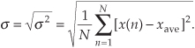
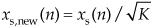

D Mean, Variance, and Standard Deviation
In our studies, we’re often forced to consider noise functions. These are descriptions of noise signals that we cannot explicitly describe with a time-domain equation. Noise functions can be quantified, however, in a worthwhile way using the statistical measures of mean, variance, and standard deviation. Although here we only touch on the very broad and important field of statistics, we will describe why, how, and when to use these statistical indicators, so that we can add them to our collection of signal analysis tools. First we’ll determine how to calculate these statistical values for a series of discrete data samples, cover an example using a continuous analytical function, and conclude this appendix with a discussion of the probability density functions of several random variables that are common in the field of digital signal processing. So let’s proceed by sticking our toes in the chilly waters of the mathematics of statistics to obtain a few definitions.
D.1 Statistical Measures
Consider a continuous sinusoid having a frequency of fo Hz with a peak amplitude of Ap expressed by the equation
Equation (D-1) completely specifies x(t)—that is, we can determine x(t)’s exact value at any given instant in time. For example, when time t = 1/4fo, we know that x(t)’s amplitude will be Ap, and at the later time t = 1/2fo, x(t)’s amplitude will be zero. On the other hand, we have no definite way to express the successive values of a random function or of random noise.† There’s no equation like Eq. (D-1) available to predict future noise-amplitude values, for example. (That’s why they call it random noise.) Statisticians have, however, developed powerful mathematical tools to characterize several properties of random functions. The most important of these properties have been given the names mean, variance, and standard deviation.
† We define random noise to be unwanted, unpredictable disturbances contaminating a signal or a data sequence of interest.
Mathematically, the sample mean, or average, of N separate values of a sequence x, denoted xave, is defined as[1]
Equation (D-2), already familiar to most people, merely states that the average of a sequence of N numbers is the sum of those numbers divided by N. Graphically, the average can be depicted as that value around which a series of sample values cluster, or congregate, as shown in Figure D-1. If the eight values depicted by the dots in Figure D-1 represent some measured quantity and we applied those values to Eq. (D-2), the average of the series is 5.17, as shown by the dotted line.
Figure D-1 Average of a sequence of eight values.
An interesting property of the average (mean value) of an x(n) sequence is that xave is the value that makes the sum of the differences between x(n) and xave equal to zero. That is, the sum of the sequence diff(n) = x(n) – xave is zero.
Now that we’ve defined average, another key definition is the variance of a sequence, σ2, defined as
Sometimes in the literature we’ll see σ2 defined with a 1/(N–1) factor before the summation instead of the 1/N factor in Eq. (D-3). In a moment we’ll explain why this is so.
Variance is a very important concept because it’s the yardstick with which we measure, for example, the effect of quantization errors and the usefulness of signal-averaging algorithms. It gives us an idea how the aggregate values in a sequence fluctuate around the sequence’s average and provides us with a well-defined quantitative measure of those fluctuations. Mathematicians call those fluctuations the dispersion of the sequence. (Because the positive square root of the variance, the standard deviation, is typically denoted as σ in the literature, we’ll use the conventional notation of σ2 for the variance.)
Equation (D-3) looks a bit perplexing if you haven’t seen it before. Its meaning becomes clear if we examine it carefully. The x(1) – xave value in the bracket, for example, is the difference between the x(1) value and the sequence average xave. For any sequence value x(n), the x(n) – xave difference, which we denote as Δ(n), can be either positive or negative, as shown in Figure D-2. Specifically, the differences Δ(1), Δ(2), Δ(3), and Δ(8) are negative because their corresponding sequence values are below the sequence average shown by the dotted line. If we replace the x(n) – xave difference terms in Eq. (D-3) with Δ(n) terms, the variance can be expressed as
Figure D-2 Difference values Δ(n) of the sequence in Figure D-1.
The reader might wonder why the squares of the differences are summed, instead of just the differences themselves. This is because, by the very nature of the definition of xave, the sum of the Δ(n) difference samples will always be zero. Because we need an unsigned measure of each difference, we use the difference-squared terms as indicated by Eq. (D-4). In that way, individual Δ(n) difference terms will contribute to the overall variance regardless of whether the difference is positive or negative. Plugging the Δ(n) values from the example sequence in Figure D-2 into Eq. (D-4), we get a variance value of 0.34. Another useful measure of a signal sequence is the square root of the variance known as the standard deviation. Taking the square root of Eq. (D-3) to get the standard deviation σ,

So far, we have three measurements to use in evaluating a sequence of values: the average xave, the variance σ2, and the standard deviation σ. Where xave indicates around what constant level the individual sequence values vary, σ2 is a measure of the magnitude of the noise fluctuations around the average xave. If the sequence represents a series of random signal samples, we can say that xave specifies the average, or constant, value of the signal. The variance σ2 is the magnitude squared, or power, of the fluctuating component of the signal. The standard deviation, then, is an indication of the magnitude of the fluctuating component of the signal.
D.2 Statistics of Short Sequences
In this section we discuss a subtle issue regarding the variance of a discrete sequence. The variance Eq. (D-3) is only exactly correct if N is infinitely large. When N is a small number and we’re computing an [x(4)–xave] term, for example, that [x(4)–xave] value is too highly influenced (biased) by the single x(4) sample. This results in an [x(4)–xave] value that’s slightly smaller than it should be[2]. As such, Eq. (D-3) is often called a biased estimate of the true variance of x(n). Mathematicians have determined that using a 1/(N–1) factor, called Bessel’s correction, before the summation in Eq. (D-3) yields a more accurate estimation of the true variance of the infinite-length sequence x(n), when we use only N samples of x(n) to estimate the true variance. That is,
Equation (D-6) is called an unbiased estimate of the variance of x(n). However, when N is greater than, say, 100, as it often is in real-world applications, the difference between Eqs. (D-3) and (D-6) will have little practical significance.
We can justify that claim by showing an example of the percent difference in using Eqs. (D-3) and (D-6), as a function of the x(n) sequence length N, as the solid curve in Figure D-3. Considering the unbiased variance to be correct (zero error), the solid error curve in Figure D-3 shows how much smaller (negative percent error) the biased variance will be compared to the unbiased variance when x(n) is Gaussian (to be described later) distributed random noise of unity variance. For instance, the percent error between the biased and the unbiased variance estimates is roughly –1 percent when N = 100. The dashed curve in Figure D-3 is equal to –100 percent times the true x(n) variance divided by N, so we can say that the percent error in using Eq. (D-3) compared to Eq. (D-6) is roughly
Figure D-3 Percent error in Eq. (D-3) relative to Eq. (D-6).
The bottom line here is that Eq. (D-6) should be considered for use in computing the variances of discrete sequences when N is small. Section 13.35 discusses a computationally efficient, and memory-saving, way to compute variances.
D.3 Statistics of Summed Sequences
Here we discuss the statistical effects of adding two sequences. This material has great utility in noise-reduction operations. If we add two equal-length independent (uncorrelated) sequences q(n) and r(n), such that
thanks to the good work of dead mathematicians we can say[3]:
• The average (mean) of the p(n) sequence is equal to the sum of the individual averages of the q(n) and r(n) sequences.
• The variance of the p(n) sequence is equal to the sum of the individual variances of the q(n) and r(n) sequences. That is,
This means that if we consider the variances of two signals as being measures of their noise powers, then when two noisy signals are added, the resultant signal’s noise power is the sum of the two individual noise powers.
• The variance of C · p(n) = C · q(n) + C · r(n), where C is a constant, is C2 times the variance of the p(n) sequence, or
The above properties are related to a key characteristic of sampled signals that we can use for noise reduction by way of averaging. Assume we have an infinitely long x(n) sequence contaminated with uncorrelated noise, and the variance of x(n) is K. If we extract N blocks of samples from x(n), with each block sequence being M samples in length, and average those N sequences, the variance of the resultant single M-sample average sequence is
The square root of Eq. (D-9) yields the standard deviation of the single M-sample average sequence as
where σx is the standard deviation of the original x(n) sequence.
As an example of Eq. (D-10), say that we have an x(n) sequence and compute the average of the first N samples of x(n), x(0) through x(N–1), to produce an xave(0) sample. Next we compute the average of the second set of N samples of x(n), x(N) through x(2N–1), to produce an xave(1) sample, and so on. If the standard deviation of an x(n) sequence, having an average value of 10 and standard deviation σx = 4, Figure D-4 shows the N = 4-point averaged xave(n) sequence having an average value of 10 and a reduced standard deviation of σx/N = 4/2 = 2. Chapter 11 gives practical examples of using Eq. (D-10) in real-world situations.
Figure D-4 xave(n) sequence when N = 4.
On a practical note, if xs(n) are signal samples and xn(n) are noise samples, we can think of the x(n) samples in Eqs. (D-9) and (D-10) as being represented by x(n) = xs(n) + xn(n). The notion of contaminating noise being uncorrelated means that all the xn(n) noise samples are independent from each other, which implies that no information about any one noise sample can be determined from knowledge of any of the other noise samples. This assumption is not always valid if a noisy x(n) signal has been filtered. With lowpass filtering, adjacent noise samples will be correlated (their amplitudes will be similar); the narrower the lowpass filter’s passband, the more adjacent noise samples tend to be correlated. If the lowpass filter’s passband is wide relative to half the sample rate (fs/2), then the correlation among noise samples will be low and the noise samples can be considered uncorrelated. If the lowpass filter’s passband is very narrow relative to fs/2, then averaging is not as effective as we might expect from Eqs. (D-9) and (D-10).
We have discussed many statistical measures of real-valued discrete sequences, so Table D-1 compiles what we’ve learned so far. The x(n) sequence in the table can be an information-carrying signal, a noise-only signal, or a combination of the two.
Table D-1 Statistical Measures of Real-Valued Sequences
D.4 Standard Deviation (RMS) of a Continuous Sinewave
In computing the average power in electric circuits, for sinewave signals engineers often use a parameter called the rms value of the sinewave. That parameter, xrms, for discrete samples is defined as

The x(n)rms in Eq. (D-11) is the square root of the mean (average) of the squares of the sequence x(n). For a continuous sinusoid x(t) = Apsin(2πft) = Apsin(ωt) whose average value is zero, xrms is xrms-sine defined as
This xrms-sine expression is a lot easier to use for calculating average power dissipation in circuit elements than performing the integral of more complicated expressions. When a signal’s average value is zero, then its rms value is equal to the signal’s standard deviation. The variance of a sinewave is, of course, the square of Eq. (D-12).
We’ve provided the equations for the mean (average) and variance of a sequence of discrete values, introduced an expression for the standard deviation or rms of a sequence, and given an expression for the rms value of a continuous sinewave. The next question is “How can we characterize random functions for which there are no equations to predict their values and we have no discrete sample values with which to work?” The answer is that we must use probability density functions. Before we do that, in Section D.6, let’s first show how to use our statistical measures to estimate the signal-to-noise ratio of a discrete signal.
D.5 Estimating Signal-to-Noise Ratios
Given the above statistics of sampled signals, we now discuss a widely used way to quantify the quality of a noise-contaminated signal. By “quality” we mean the difference between listening to a recording of the Beatles’ song “Hey Jude” on your iPod in a library and listening to the song while standing next to a running jet engine. We quantify the quality of a noise-contaminated signal by measuring, or estimating, its signal-power-to-noise-power ratio (SNR). The SNR of a signal is the ratio of the power of the noise-free signal over the power of the noise, or
To illustrate the notion of SNR, the following list shows the SNRs (in dB) of a few common signal processing devices:

The SNR of a signal can be estimated in either the time domain or the frequency domain. We discuss those operations next.
D.5.1 Estimating SNR in the Time Domain
We can estimate, by way of time-domain measurement, the SNR of a signal based on time-domain sample values. If xs(n) are real-valued signal samples and xn(n) are real-valued noise samples, the SNR of a signal x(n) = xs(n) + xn(n) is
where the divide-by-N operations are shown for clarity but need not be performed because they cancel in the numerator and denominator. If we know the variances of xs(n) and xn(n), we can express the SNR of the fluctuating (AC) portion of a signal as
In practice signal powers can vary over many orders of magnitude. For example, military radar systems transmit signals whose power is measured in megawatts, while the signal received by your cell phone antenna is measured in microwatts. That’s 12 orders of magnitude! As such, it’s both convenient and common to describe signal power and noise power logarithmically using decibels. (Decibels are discussed in Appendix E.) We express signal-to-noise ratios measured in decibels (dB) as
where the SNR term in Eq. (D-16) is the SNR value from Eqs. (D-14) or (D-15). If we know the rms values of xs(n) and xn(n), then we can express a signal’s SNR in dB as

Because the ratio in Eq. (D-17) is in terms of amplitudes (voltages or currents), rather than powers, we’re forced to use the factor of 20 in computing SNRdB based on rms values. If we know the standard deviations of xs(n) and xn(n), we can express the SNR of the fluctuating (AC) portion of a signal in dB as
The values for linear SNR, Eq. (D-14), are always positive, but values for SNRdB can be positive or negative. For example, if a signal’s linear SNR is 4, then its SNRdB is 10 · log10(4) = 6 dB. If a signal’s linear SNR is 1/4, then its SNRdB is 10 · log10(1/4) = –6 dB.
D.5.2 Estimating SNR in the Frequency Domain
We can obtain a rough estimate of the SNR of a signal based on its frequency-domain characteristics. The standard procedure for doing so is as follows: Assume we have N = 100 samples of the noisy 986 Hz real-valued x(n) sinusoid, where the sample rate is fs = 8 kHz, as shown in Figure D-5(a). After performing a 100-point DFT, and computing the spectral magnitude-squared sample values, we obtain the positive-frequency |X(m)|2 power spectral samples depicted in Figure D-5(b).
Figure D-5 SNR estimation example: (a) noisy time-domain sinusoid; (b) 100-point DFT power samples.
Next we determine a Threshold power value, the dashed line in Figure D-5(b), above which only signal-related power samples exist and below which are the noise-only power samples. The estimated SNR of x(n) is then
The SNR measured in dB is found using
There are several practical topics to keep in mind when estimating SNR by way of frequency-domain samples:
• For computational-efficiency reasons, the length of x(n) should be an integer power of two so that fast Fourier transforms (FFTs) can be used to obtain an |X(m)|2 sequence.
• Due to the spectral symmetry of real-only time samples, we need only examine the |X(m)|2 power samples in the range 0 ≤ m ≤ N/2, i.e., positive frequency.
• The Threshold value should be set such that as many of the signal power samples as possible, including any harmonics of the fundamental signal, are above that Threshold value.
• If we repeat our SNR estimation computation on multiple non-overlapping N-sample x(n) sequences, we’ll see a noticeable variation (variance) in the various SNR estimation results. To improve the accuracy, and repeatability, of our SNR estimation it’s prudent to collect many blocks of N-sample x(n) sequences and perform many FFTs to compute multiple |X(m)| magnitude sequences. Then those multiple |X(m)| sequences are averaged before computing a single |X(m)|2 power sequence for use in Eq. (D-19). The idea is to improve the accuracy (reduce the variance) of our SNR estimations by way of averaging as indicated by Eq. (D-2).
D.5.3 Controlling Test Signal SNR in Software
For completeness, below are methods for adjusting the SNR of a real-valued discrete test signal generated in software. Here’s what we mean. Assume we have generated a noise-contaminated zero-mean signal sequence x(n) = xs(n) + xn(n), where xs(n) are noise-free signal samples and xn(n) are noise-only samples. We can adjust the SNR of x(n) to a desired value of SNRnew, measured in dB, by scaling the xn(n) noise samples as
where
So the SNR of the new xnew(n) = xs(n) + xn,new(n) sequence will be SNRnew dB where the original xs(n) noise-free samples remain unchanged. Notice that the ratio in Eq. (D-22) is the linear (not dB) SNR of the original x(n) sequence.
In a similar manner, we scale the original xs(n) noise-free samples as

so that the SNR of the new xnew(n) = xs,new(n) + xn(n) sequence will be the desired SNRnew dB. In this case the original xn(n) noise samples remain unchanged.
D.6 The Mean and Variance of Random Functions
To determine the mean or variance of a random function, we use what’s called the probability density function. The probability density function (PDF) is a measure of the likelihood of a particular value occurring in some function. We can explain this concept with simple examples of flipping a coin or throwing dice as illustrated in Figures D-6(a) and (b). The result of flipping a coin can only be one of two possibilities: heads or tails. Figure D-6(a) indicates this PDF and shows that the probability (likelihood) is equal to one-half for both heads and tails. That is, we have an equal chance of the coin side facing up being heads or tails. The sum of those two probability values is one, meaning that there’s a 100 percent probability that either a head or a tail will occur.
Figure D-6 Simple probability density functions: (a) probability of flipping a single coin; (b) probability of a particular sum of the upper faces of two dice; (c) probability of the order of birth of the girl and her sibling.
Figure D-6(b) shows the probability of a particular sum of the upper faces when we throw a pair of dice. This probability function is not uniform because, for example, we’re six times more likely to have the die faces sum to seven than sum to two (snake eyes).
We can say that after tossing the dice a large number of times, we should expect that 6/36 = 16.7 percent of those tosses would result in sevens, and 1/36 = 2.8 percent of the time we’ll get snake eyes. The sum of those 11 probability values in Figure D-6(b) is also one, telling us that this PDF accounts for all (100 percent) of the possible outcomes of throwing the dice.
The fact that PDFs must account for all possible result conditions is emphasized in an interesting way in Figure D-6(c). Suppose a woman says, “Of my two children, one is a girl. What’s the probability that my daughter has a sister?” Be careful now—curiously enough, the answer to this controversial question is not a 50-50 chance. There are more possibilities to consider than the girl just having a brother or a sister. We can think of all the possible combinations of birth order of two children such that one child is a girl. Because we don’t know the gender of the first-born child, there are three gender order possibilities: girl, then boy; boy, then girl; and girl, then girl as shown in Figure D-6(c). So the possibility of the daughter having a sister is 1/3 instead of 1/2! (Believe it.) Again, the sum of those three 1/3rd probability values is one.
Two important features of PDFs are illustrated by the examples in Figure D-6: PDFs are always positive and the area under their curves must be equal to unity. The very concept of PDFs make them a positive likelihood that a particular result will occur, and the fact that some result must occur is equivalent to saying that there’s a probability of one (100 percent chance) that we’ll have that result. For continuous probability density functions, p(x), we indicate these two characteristics by
and
In Section D.1 we illustrated how to calculate the average (mean) and variance of discrete samples. We can also determine these statistical measures for a random function x if we know the PDF of that function. Using μx to denote the average of a random function of x, μx is defined as

and the variance of x is defined as[4]
In digital signal processing, we’ll encounter continuous probability density functions that are uniform in value similar to the examples in Figure D-3. In these cases it’s easy to use Eqs. (D-26) and (D-27) to determine their average and variance. Figure D-7 illustrates a uniform continuous PDF indicating a random function whose values have an equal probability of being anywhere in the range from –a to b.
Figure D-7 Continuous uniform probability density function.
From Eq. (D-25) we know that the area under the curve must be unity (i.e., the probability is 100 percent that the value will be somewhere under the curve). So the amplitude of p(x) must be the area divided by the width, or p(x) = 1/(b + a). From Eq. (D-26) the average of this p(x) is
which happens to be the midpoint in the range from –a to b. The variance of the PDF in Figure D-7 is

We use the results of Eqs. (D-28) and (D-29) in Chapter 9 to analyze the errors induced by quantization from analog-to-digital converters, and the effects of finite word lengths of hardware registers.
D.7 The Normal Probability Density Function
A probability density function (PDF) that’s so often encountered in nature deserves our attention. This function is so common that it’s actually called the normal PDF and is also sometimes called the Gaussian PDF. (A scheme for generating discrete data to fit this function is discussed in Section 13.12.)
This function, whose shape is shown in Figure D-8, is important because random data having this distribution is very useful in testing both software algorithms and hardware processors. The normal PDF is defined mathematically by
Figure D-8 A normal PDF with mean = μx and standard deviation = σ.
The area under the curve is one and the percentages at the bottom of Figure D-8 tell us that, for random functions having a normal distribution, there’s a 68.27 percent chance that any particular value of x will differ from the mean by ≤σ. Likewise, 99.73 percent of all the x data values will be within 3σ of the mean μx.
References
[1] Papoulis, A. Probability Random Variables, and Stochastic Processes, McGraw-Hill, New York, 1965, pp. 189, pp. 266–268.
[2] Miller, Irwin, and Freund, John. Probability and Statistics for Engineers, 2nd ed., Prentice Hall, Englewood Cliffs, New Jersey, 1977.
[3] Meyer, B. Introductory Probability and Statistical Applications, Addison-Wesley, Reading, Massachusetts, 1965, pp. 122–125.
[4] Bendat, Julius, and Piersol, Allen. Measurement and Analysis of Random Data, John Wiley and Sons, New York, 1972.